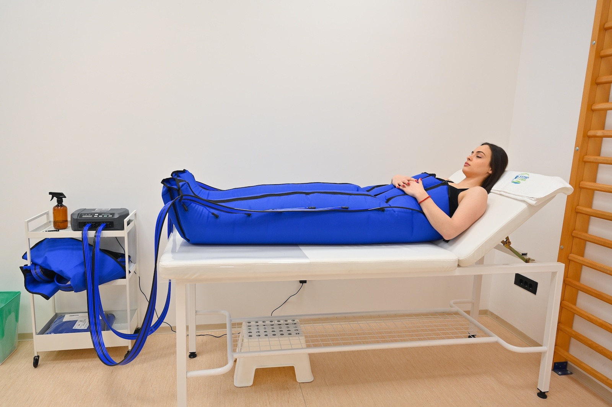
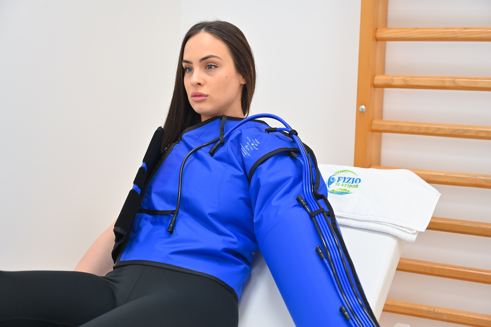
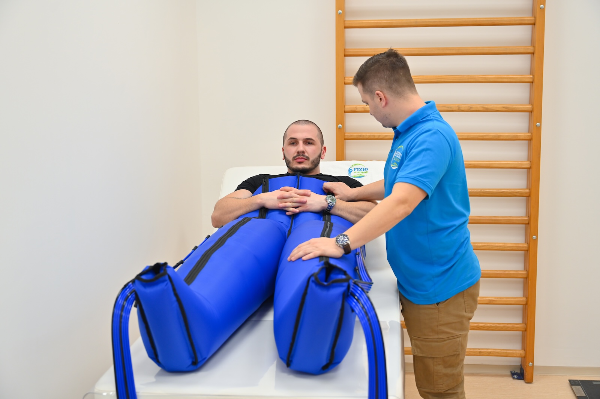
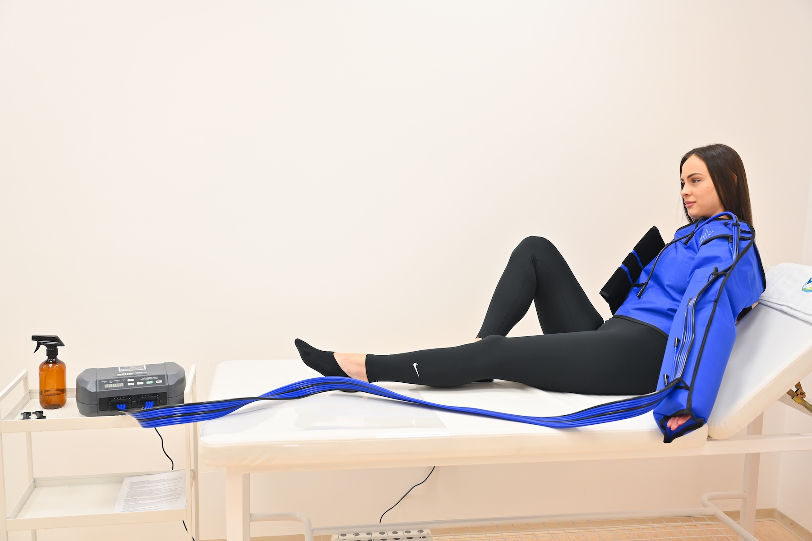

Presoterapija — laganije noge u 30 minuta
Već ste osetili: noge su teške i umorne na kraju radnog dana, otečene posle puta avionom ili dugog sedenja, ili „tegobne" nakon treninga. Presoterapija je nežan tretman koji u sporim talasima, od stopala naviše, lagano pritiska i opušta noge — pomaže telu da brže izbaci višak tečnosti, smanji otok i osećaj težine.

Kako izgleda tretman
Obuvete „čizme"
Specijalne čizme se navlače preko helanki ili pidžame, sve do bedara. Postoje i posebni nastavci za stomak i ruke.
Talas masaže
Komore se redom, jedna po jedna, lagano naduvaju i ispumpaju — kao spori, prijatan talas masaže koji ide od stopala ka kukovima.
Vi se odmarate
Većini je tretman toliko prijatan da čitaju, listaju telefon ili zadremaju. Pritisak možete u svakom trenutku spustiti.
Za koga je presoterapija idealna
Ako se prepoznajete u nekoj od situacija ispod, najverovatnije ćete osetiti razliku već posle prve ili druge sesije.
Umorne i otečene noge u svakodnevici
- Težina i umor u nogama na kraju radnog dana
- Otečeni gležnjevi posle puta avionom ili dugih putovanja kolima
- „Tegobne" noge na vrućini ili u trudnoći (uz saglasnost lekara)
- Noćni grčevi i trnci u nogama
- Početne tegobe sa proširenim venama — osećaj težine i pulsiranja
- Slaba cirkulacija kod sedećih ili stojećih zanimanja
Sport, estetika i oporavak
- Brži oporavak nakon treninga, trčanja ili biciklizma
- Manje „uštinutih" i upaljenih mišića sutradan posle napornog treninga
- Anti‑celulit programi — uz redovne tretmane vidljivije glađa koža
- Smanjenje otoka posle operacije ili povrede (kada lekar dozvoli)
- Drenaža posle liposukcije i estetskih intervencija (uz preporuku)
- „Detoks" osećaj — laganije, ispražnjene noge već posle 2–3 tretmana


Koliko traje i kako se planira
Polazni okvir — sve podešavamo prema vašim ciljevima, osetu i preporuci lekara ako je potrebno.
- Trajanje sesije
- 25–40 minuta
- Pritisak
- prijatan, podesiv tokom tretmana
- Frekvencija
- 2–3 puta nedeljno
- Prvi rezultati
- već posle 1–2 tretmana
- Tipičan paket
- 8–12 tretmana
- Održavanje
- 1× nedeljno ili po potrebi

Šta da ponesete i šta da očekujete
Obucite nešto lagano — helanke, donji deo pidžame ili tanke pantalone. Ponesite flašicu vode: posle tretmana ćete obično biti žedniji nego inače, što je dobar znak da drenaža radi. Sesija traje 25–40 minuta i može se kombinovati sa drugim tretmanima istog dana. Posle prve sesije gotovo svi prijavljuju da su im noge laganije; trajan efekat (manji otok, brži oporavak, glađa koža) gradi se kroz redovne tretmane.
Kada presoterapija nije za vas
Molimo vas da nam unapred kažete ako: trenutno imate ili ste skoro imali krvni ugrušak u nozi (DVT), upalu vena (tromboflebitis), otvorenu ranu ili infekciju kože na predelu tretmana, težu srčanu ili bubrežnu slabost, malignitet koji se aktivno leči, ili niste sigurni (u trudnoći, posle skorašnje operacije). Pre prve sesije postavljamo nekoliko kratkih pitanja i, ako je potrebno, tražimo dozvolu vašeg lekara — bezbednost je uvek na prvom mestu.